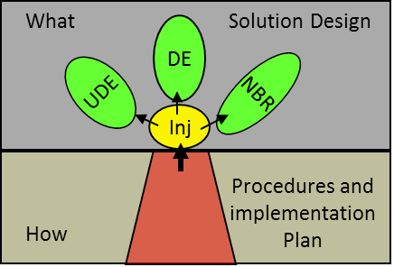

цветок инъекции (injection flower) - Структурированное графическое представление областей, которые должны быть изучены, проверены и разработаны TOC-реализатором (TOC implementer) для обеспечения успешной реализации инъекции.
Верхняя часть цветка инъекции содержит дизайн решения («Что?» - соответствующие знания для инъекции),
нижняя часть представляет механику («Как» - практические аспекты инъекции, описывающие способ интеграции инъекции в реальность, а также способы ее реализации).
Использование: для каждой инъекции группа реализации должна изучить ее сущность и структуру, а также убедиться, что инъекция устраняет соответствующие нежелательные эффекты, вызывает желаемые эффекты и не вызывает каких-либо значительных оговорок отрицательных ветвей. Для каждой инъекции команда составляет план внедрения и разрабатывает процедуры.
Роль ТОС-ведущего заключается в том, чтобы поощрять и поддерживать команду внедрения в выполнении этой работы.

См.: последовательность вопросов Изменения, отсечение негативных ветвей
#мп
Синоним: injection flower